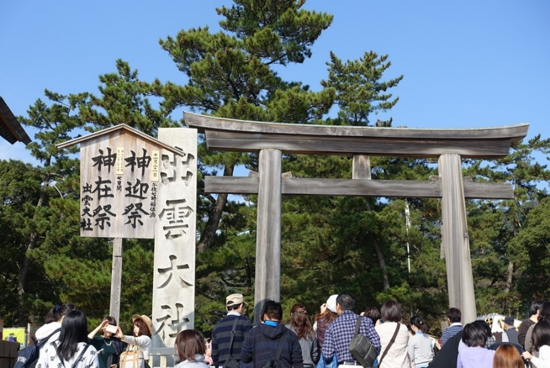
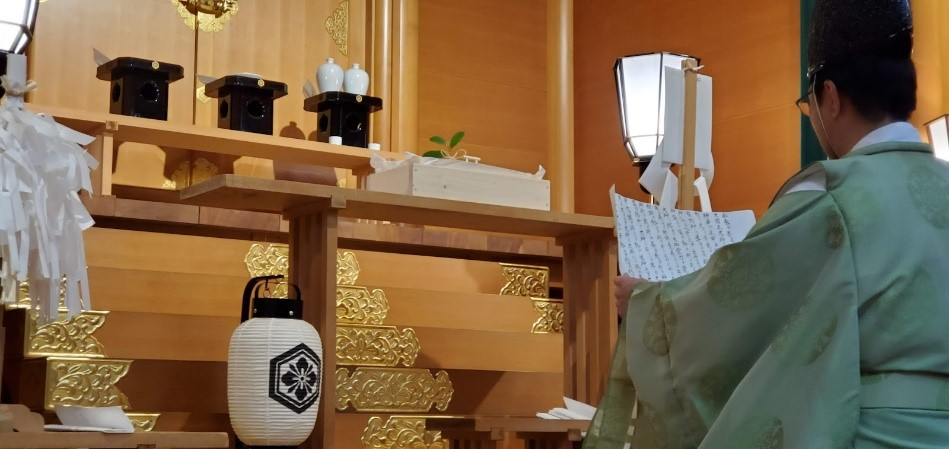
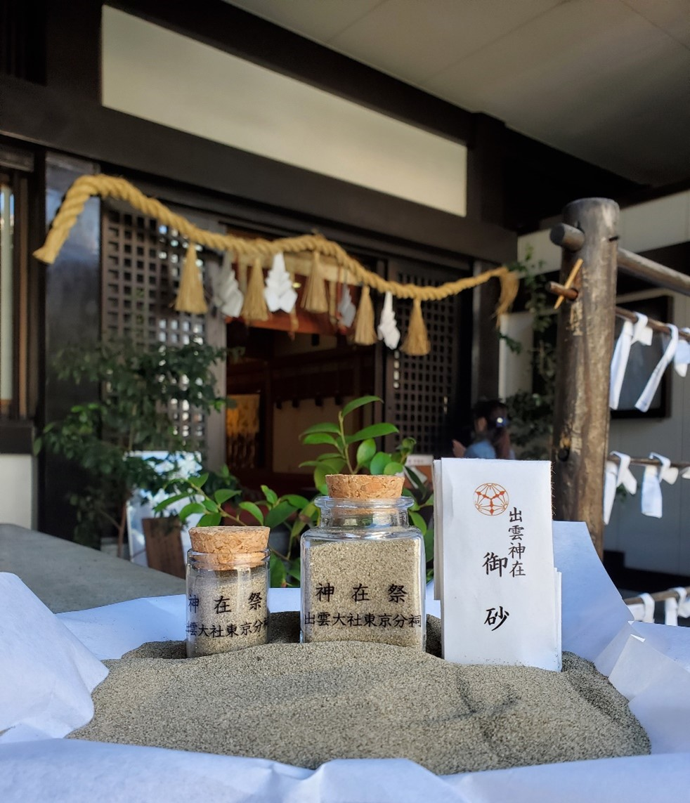

令和７年 神在祭祈念行事のご案内
投稿日: 2025.10.23
  
蜃ｺ髮ｲ螟ｧ遉ｾ譚ｱ莠ｬ蛻�逾�
莉､蜥鯉ｼ怜ｹｴ 逾槫惠逾ｭ逾亥ｿｵ陦御ｺ九�ｮ縺疲｡亥��
蜃ｺ髮ｲ螟ｧ遉ｾ逾槫惠逾ｭ縺ｮ縺疲｡亥��
莉､蜥�7蟷ｴ縺ｮ蜃ｺ髮ｲ螟ｧ遉ｾ縺ｮ逾槫惠逾ｭ縺ｮ譛滄俣縺ｯ縲�11譛�29譌･縺ｫ陦後ｏ繧後ｋ逾櫁ｿ守･ｭ繧偵ｂ縺｣縺ｦ蟋九∪繧翫��12譛�6譌･縺ｮ逾樒ｭ牙悉蜃ｺ逾ｭ縺ｾ縺ｧ縺ｮ髢薙→縺ｪ繧翫∪縺吶��
縺薙�ｮ逾槫惠逾ｭ縺ｫ縺ｯ蜈ｨ蝗ｽ縺ｮ逾槭��縺悟�ｺ髮ｲ螟ｧ遉ｾ縺ｫ逾樣寔縺�縺ｪ縺輔ｌ縲∫ｧ√◆縺｡縺ｮ蠕｡邵√ｒ邨舌ｓ縺ｧ縺上□縺輔ｋ逾櫁ｭｰ繧翫′陦後ｏ繧後∪縺吶�ゅ％縺ｮ蜃ｺ髮ｲ逾槫惠縺ｮ譛滄俣縺ｫ縺ｯ縲瑚憶邵√�阪ｒ豎ゅａ縺ｦ蜈ｨ蝗ｽ縺九ｉ螟ｧ蜍｢縺ｮ蜿りｩ｣閠�縺悟盾諡昴＆繧後∪縺吶��
縺薙�ｮ讖滉ｼ壹↓蜃ｺ髮ｲ隧｣繧翫ｒ縺励◆縺�縺ｨ鬘倥≧縺ｮ縺ｯ蜿､莉｣繧医ｊ邯壹￥閾ｪ辟ｶ縺ｪ莠ｺ諠�縺ｧ縺吶′縲∫樟莉｣遉ｾ莨壹�ｮ隍�髮代＆縺ｮ荳ｭ縺ｧ逕溘″繧狗ｧ�驕斐�ｯ縲∵悍縺ｿ縺ｩ縺翫ｊ縺ｫ縺ｪ繧峨↑縺�縺薙→縺ｮ譁ｹ縺悟､壹＞縺ｧ縺吶��
蜃ｺ髮ｲ螟ｧ遉ｾ譚ｱ莠ｬ蛻�逾�縺ｧ縺ｯ縲√◎縺�縺励◆莠ｺ縲�縺ｮ轤ｺ縺ｫ蜃ｺ髮ｲ螟ｧ遉ｾ逾槫惠逾ｭ逾亥ｿｵ縺ｨ縺励※荳玖ｨ倥�ｮ逾ｭ蜈ｸ陦御ｺ九ｒ陦後▲縺ｦ縺翫ｊ縺ｾ縺吶�ｮ縺ｧ縲√＃螳ｶ譌上�ｻ蜿倶ｺｺ縺願ｪ倥＞縺ゅｏ縺帙�ｮ荳翫�√＃蜿よ享縺上□縺輔＞縺ｾ縺帙�ら嚀讒倥�ｮ縺願ｶ翫＠繧貞�ｭ譛ｬ譛ｨ縺ｧ縺雁ｾ�縺｡縺励※縺翫ｊ縺ｾ縺吶��
蜃ｺ髮ｲ螟ｧ遉ｾ譚ｱ莠ｬ蛻�逾�
逾ｭ蜈ｸ陦御ｺ九�ｮ縺疲｡亥��
蜃ｺ髮ｲ螟ｧ遉ｾ逾槫惠逾ｭ逾亥ｿｵ
迚ｹ蛻･逾育･ｷ縺ｮ縺疲｡亥��
11譛�23譌･(譌･)縲�蜊亥ｾ�3譎ゑｼ亥女莉倥�∝壕蠕�2譎る幕蟋具ｼ�
11譛�24譌･(譛�)縲�蜊亥ｾ�3譎ゑｼ亥女莉倥�∝壕蠕�2譎る幕蟋具ｼ�
11譛�29譌･(蝨�)縲�蜊亥ｾ�3譎ゑｼ亥女莉倥�∝壕蠕�2譎る幕蟋具ｼ�
11譛�30譌･(譌･)縲�蜊亥ｾ�3譎ゑｼ亥女莉倥�∝壕蠕�2譎る幕蟋具ｼ�
蛻晉ｩよ侭縲�8,000蜀�
窶ｻ 莠育ｴ�荳崎ｦ√�ょｽ捺律縲��ｼ帝嚴蜿嶺ｻ倥∈縺願ｶ翫＠荳九＆縺�縲�
逧�讒倥�ｮ濶ｯ邵√ｄ隲ｸ鬘俶�仙ｰｱ縺ｮ鬘倥＞莠九ｒ縺雁叙谺｡縺弱＞縺溘＠縺ｾ縺吶��
縺薙�ｮ蠕｡逾育･ｷ縺ｧ縺ｯ迚ｹ蛻･縺ｫ蜃ｺ髮ｲ螟ｧ遉ｾ縺ｮ蟾ｫ螂ｳ闊槭ｂ螂我ｻ輔＞縺溘＠縺ｾ縺吶��
逾櫁ｿ弱�ｮ蠕｡遐ゑｼ域焚驥城剞螳夲ｼ�
譛溘��髢薙��11譛�8譌･�ｽ�12譛�6譌･
蛻晉ｩよ侭縲�繝懊ヨ繝ｫ�ｼ亥､ｧ�ｼ峨��1,500蜀�
縲�縲�縲�縲�繝懊ヨ繝ｫ�ｼ亥ｰ擾ｼ峨��1,200蜀�
縲�縲�縲�縲�邏吶��蛹�縲�縲�縲�縲�1,000蜀�
謨ｰ驥城剞螳壹�ら┌縺上↑繧頑ｬ｡隨ｬ邨ゆｺ�縺ｨ縺ｪ繧翫∪縺吶�ｮ縺ｧ縲�縺比ｺ�謇ｿ縺上□縺輔＞縺ｾ縺帙��
逾槫惠逾ｭ髯仙ｮ壽愕蜊ｰ�ｼ域焚驥城剞螳夲ｼ�
譛溘��髢薙��11譛�8譌･�ｽ�12譛�6譌･
蛻晉ｩよ侭縲�1,000蜀�
謨ｰ驥城剞螳壹�ら┌縺上↑繧頑ｬ｡隨ｬ邨ゆｺ�縺ｨ縺ｪ繧翫∪縺吶�ｮ縺ｧ縲�縺比ｺ�謇ｿ縺上□縺輔＞縺ｾ縺帙��
莉､蜥鯉ｼ怜ｹｴ
蜃ｺ髮ｲ螟ｧ遉ｾ縺ｮ逾槫惠逾ｭ
11譛�29譌･縲�蜊亥ｾ鯉ｼ玲凾縲�縲�逾櫁ｿ守･ｭ
11譛�30譌･縲�蜊亥燕�ｼ呎凾縲�縲�逾槫惠逾ｭ
蜊亥燕11譎ゅ��鮴崎寐逾櫁ｬ帛､ｧ逾ｭ
12譛� 1譌･縲�蜊亥燕10譎ゅ��縲�譛亥ｧ狗･ｭ繝ｻ邵∫ｵ仙､ｧ逾ｭ
12譛� 4譌･縲�蜊亥燕10譎ゅ��縲�逾槫惠逾ｭ繝ｻ邵∫ｵ仙､ｧ逾ｭ
12譛� 6譌･縲�蜊亥燕10譎ゅ��縲�逾槫惠逾ｭ繝ｻ邵∫ｵ仙､ｧ逾ｭ
蜊亥ｾ鯉ｼ疲凾縲�逾樒ｭ牙悉蜃ｺ逾ｭ
窶ｻ
譫�蜀�縺ｯ縲∝�ｺ髮ｲ螟ｧ遉ｾ蠕｡譛ｬ遉ｾ�ｼ亥�ｺ髮ｲ蟶ゑｼ峨�ｮ莠亥ｮ壹〒縺吶��
隧ｳ邏ｰ縺ｯ蜃ｺ髮ｲ螟ｧ遉ｾ蜈ｬ蠑上�帙�ｼ繝�繝壹�ｼ繧ｸ縺ｧ縺皮｢ｺ隱阪￥縺�縺輔＞縲�
謌ｻ繧�
お問い合わせ
出雲大社東京分祠
〒106-0032 東京都港区六本木7-18-5
TEL: 03-3401-9301
受付時間: 午前9時～午後5時